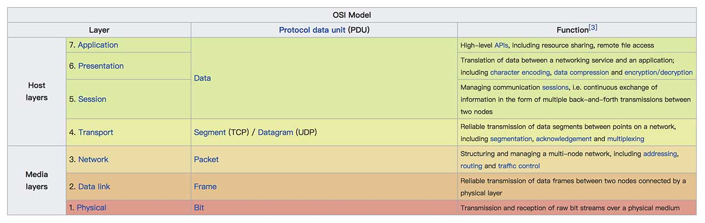
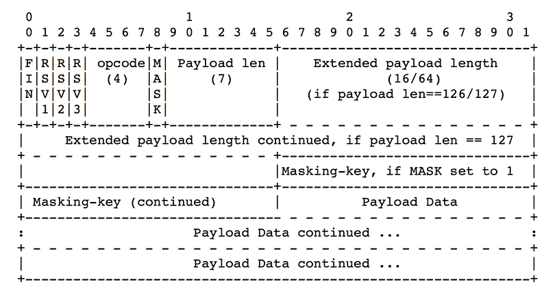
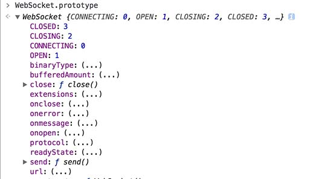
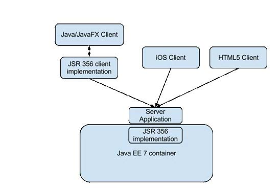
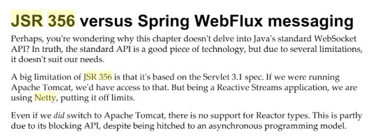

1 概念
1.1 comet
天不生WS，万古如长夜。
在WebSocket出现之前，服务端主动推送消息给浏览器的需求就已经存在了，但是HTTP这个协议本来就不是设计用来进行双向通信的，所以机智的工程师们采取了各种hack的方式来实现这种功能，这些实现方式都统称为comet。
但是无可避免地，这些技术都存在缺陷，既然WebSocket都出现了，那么这些技术大概也能进博物馆了，除了实现Fallback方案时需要去了解之外，这些技术感觉价值不大了，所以不展开说，如果读者有兴趣，可以根据关键词找资料去了解。
Comet is a web application model in which a long-held HTTPS request allows a web server to push data to a browser, without the browser explicitly requesting it
https://en.wikipedia.org/wiki/Comet_(programming))
With long-polling we set the bar to cross-browser push. With XHR streaming and ActiveXObject(’htmlfile’) we raised it to cross-browser streaming. With SSE we’ve been trying to raise the bar to native, cross-browser streaming
1.1.1 实现
1.1.1.1 Streaming
1.1.1.1.1 Hidden iframe
1.1.1.1.2 XMLHttpRequest
1.1.1.2 Ajax Long-pulling
1.1.1.2.1 XMLHttpRequest long polling
1.1.1.2.2 Script tag long polling
1.2 WebSocket协议
WebSocket是一种在单个TCP连接上进行全双工通讯的协议。是有别于HTTP的另一个TCP协议，它们都属于OSI模型中的第七层:

RFC 6455 states that WebSocket “is designed to work over HTTP ports 80 and 443 as well as to support HTTP proxies and intermediaries” thus making it compatible with the HTTP protocol.
原文为：
The WebSocket Protocol attempts to address the
goals of existing bidirectional HTTP technologies in the context of
the existing HTTP infrastructure; as such, it is designed to work
over HTTP ports 80 and 443 as well as to support HTTP proxies and
intermediaries, even if this implies some complexity specific to the
current environment.
1.2.1 握手
To establish a WebSocket connection, the client sends a WebSocket handshake request, for which the server returns a WebSocket handshake response, as shown in the example below:
客户端请求
1
2
3
4
5
6
7GET / HTTP/1.1
Upgrade: websocket
Connection: Upgrade
Host: example.com
Origin: http://example.com
Sec-WebSocket-Key: sN9cRrP/n9NdMgdcy2VJFQ==
Sec-WebSocket-Version: 13服务器回应
1
2
3
4
5HTTP/1.1 101 Switching Protocols
Upgrade: websocket
Connection: Upgrade
Sec-WebSocket-Accept: fFBooB7FAkLlXgRSz0BT3v4hq5s=
Sec-WebSocket-Location: ws://example.com/
The handshake resembles HTTP in allowing servers to handle HTTP connections as well as WebSocket connections on the same port. Once the connection is established, communication switches to a bidirectional binary protocol which doesn’t conform to the HTTP protocol.
1.2.2 Frame
WebSocket传输的数据是基于帧的，一帧数据里包含两部分：数据主体和控制帧
there are types for textual data (which is interpreted as UTF-8 [RFC3629]
text), binary data (whose interpretation is left up to the
application), and control frames (which are not intended to carry
data for the application but instead for protocol-level signaling,
such as to signal that the connection should be closed)
为了避免混淆网络中间件（例如拦截代理）以及出于安全原因，
- 客户端必须屏蔽（mask）所有发送给服务器的帧，如果服务器收到了未屏蔽的帧，必须关闭连接。在这种情况下，服务器可以发送一个
Close帧，状态码为1002。 - 服务器不能屏蔽任何发送给客户端的帧，如果客户端收到了屏蔽过的帧，必须关闭连接。这种情况下，也可以利用状态码
1002。
基本的帧协议（The Base Framing Protocol）简单地定义以下部分：
Frame：
- opcode：操作码，用于定义一个帧的类型
- Payload data
- Extension data：
- payload length：载荷长度
- designated locations：指定位置
- Application Data
- Extension data：

1.2.3 心跳
一端发送Ping帧，另一端发送Pong帧作为响应
- The
Pingframe contains an opcode of0x9. - The
Pongframe contains an opcode of0xA.
1.2.4 优点
- 较少的控制开销。在连接创建后，服务器和客户端之间交换数据时，用于协议控制的数据包头部相对较小。在不包含扩展的情况下，对于服务器到客户端的内容，此头部大小只有2至10字节（和数据包长度有关）；对于客户端到服务器的内容，此头部还需要加上额外的4字节的掩码。相对于HTTP请求每次都要携带完整的头部，此项开销显著减少了。
- 更强的实时性。由于协议是全双工的，所以服务器可以随时主动给客户端下发数据。相对于HTTP请求需要等待客户端发起请求服务端才能响应，延迟明显更少；即使是和Comet等类似的长轮询比较，其也能在短时间内更多次地传递数据。
- 保持连接状态。于HTTP不同的是，Websocket需要先创建连接，这就使得其成为一种有状态的协议，之后通信时可以省略部分状态信息。而HTTP请求可能需要在每个请求都携带状态信息（如身份认证等）。
- 更好的二进制支持。Websocket定义了二进制帧，相对HTTP，可以更轻松地处理二进制内容。
- 可以支持扩展。Websocket定义了扩展，用户可以扩展协议、实现部分自定义的子协议。如部分浏览器支持压缩等。
- 更好的压缩效果。相对于HTTP压缩，Websocket在适当的扩展支持下，可以沿用之前内容的上下文，在传递类似的数据时，可以显著地提高压缩率。
2 API
2.1 JavaScript API
The WebSocket Interface1
2
3
4
5
6
7
8
9
10
11
12
13
14
15
16
17
18
19
20
21
22
23
24
25
26
27interface WebSocket : EventTarget {
readonly attribute DOMString url;
// ready state
const unsigned short CONNECTING = 0;
const unsigned short OPEN = 1;
const unsigned short CLOSING = 2;
const unsigned short CLOSED = 3;
readonly attribute unsigned short readyState;
readonly attribute unsigned long bufferedAmount;
// networking
attribute EventHandler onopen;
attribute EventHandler onerror;
attribute EventHandler onclose;
readonly attribute DOMString extensions;
readonly attribute DOMString protocol;
void close([Clamp] optional unsigned short code, optional DOMString reason);
// messaging
attribute EventHandler onmessage;
attribute DOMString binaryType;
void send(DOMString data);
void send(Blob data);
void send(ArrayBuffer data);
void send(ArrayBufferView data);
};

2.2 Java API
2.2.1 Java EE
JSR 356, Java API for WebSocket
JSR 356是Java EE 7标准的一部分。
开源实现有：
- GlassFish
- Jetty 9.1.+
以下是一个典型的例子：

服务端由Java实现，用JSR 356的一个实现来处理WebSocket协议的细节。
客户端中，JavaFX客户端可以依赖任何符合JSR 356的客户端来处理WebSocket协议，而其他客户端则可以使用符合RFC 6455的实现来与服务器通信。
兼容JSR 356的好处：
- 防止供应商锁定（vendor-lock），可以自由地选择库和应用服务器
JSR 356的缺点：
- 基于Servlet 3.1
目前兼容Servlet 3.1的有tomcat，但是如果在使用Netty，则不兼容了
 - J2EE标准前景不太好
J2EE标准发布比较慢，RFC6455在2011年12月就正式发布了，而相应的JSR 356却在2013年5月才发布，相应地，Jetty在2013年11月才发布对JSR 356支持的稳定版本，从RFC标准发布到JSR标准实现之间相距了2年。 - 考虑到在一般的场景下，WebSocket客户端都不是Java客户端，所以花费精力去适配JSR 356没必要，别的语言才不管J2EE的标准。
2.2.2 非Java EE
实现了RFC6455标准即可。
3 Fallback
目前主流的浏览器基本都支持WebSocket，但是，IE 10（不含10）以下的版本不支持，而这些版本的IE用户量还是不少的，因此需要有后备方案。
3.1 sockjs
项目主页：
https://github.com/sockjs/sockjs-client
- The API should follow HTML5 Websockets API as closely as possible.
- All the transports must support cross domain connections out of the box. It’s possible and recommended to host a SockJS server on a different server than your main web site.
- There is support for at least one streaming protocol for every major browser.
- Streaming transports should work cross-domain and should support cookies (for cookie-based sticky sessions).
- Polling transports are used as a fallback for old browsers and hosts behind restrictive proxies.
- Connection establishment should be fast and lightweight.
- No Flash inside (no need to open port 843 - which doesn’t work through proxies, no need to host ‘crossdomain.xml’, no need to wait for 3 seconds in order to detect problems)
- API尽量接近HTML5 WebSocket的API
- 开箱即用地对所有协议支持跨域连接，可以在主站点以外架设SockJS服务器，并且也推荐这样做。
- 对每个主流的浏览器至少支持一种streaming协议
- 流传输（streaming transports）应该能跨域工作，并且支持cookies（基于cookies的会话）
- Polling传输作为一种后备方案，支持老版本的浏览器和被限制性代理所限制的主机
- 连接的建立应该是快速和轻量级的
- 不包含Flash（不必开启843端口）
在底层的实现上，SockJS会首先尝试使用原生的WebSocket，如果失败了，再根据浏览器来决定采取相应的传输协议。
Under the hood SockJS tries to use native WebSockets first. If that fails it can use a variety of browser-specific transport protocols and presents them through WebSocket-like abstractions.
Supported transports, by browser (html served from http:// or https://)
| _Browser_ | _Websockets_ | _Streaming_ | _Polling_ |
|---|---|---|---|
| IE 6, 7 | no | no | jsonp-polling |
| IE 8, 9 (cookies=no) | no | xdr-streaming † | xdr-polling † |
| IE 8, 9 (cookies=yes) | no | iframe-htmlfile | iframe-xhr-polling |
| IE 10 | rfc6455 | xhr-streaming | xhr-polling |
| Chrome 6-13 | hixie-76 | xhr-streaming | xhr-polling |
| Chrome 14+ | hybi-10 / rfc6455 | xhr-streaming | xhr-polling |
| Firefox <10 | no ‡ | xhr-streaming | xhr-polling |
| Firefox 10+ | hybi-10 / rfc6455 | xhr-streaming | xhr-polling |
| Safari 5.x | hixie-76 | xhr-streaming | xhr-polling |
| Safari 6+ | rfc6455 | xhr-streaming | xhr-polling |
| Opera 10.70+ | no ‡ | iframe-eventsource | iframe-xhr-polling |
| Opera 12.10+ | rfc6455 | xhr-streaming | xhr-polling |
| Konqueror | no | no | jsonp-polling |
4 实现
4.1 Netty
4.2 Undertow
4.3 Jetty
4.4 Vert.x
4.5 Spray-WebSocket
https://github.com/dcaoyuan/spray-websocket
4.6 nodejs-websocket
https://github.com/sitegui/nodejs-websocket
4.7 Grizzly
https://javaee.github.io/grizzly/
4.8 Go
5 进一步封装的协议
为什么不直接使用WebSocket协议？
- 数据的解析是未定义的。
WebSocket支持text和binary两种传输数据格式，无论是哪种格式，客户端和服务器都需要约定如何包装、解析数据。因此在WebSocket协议的基础上，还需要再定义一层协议，客户端和服务端才能完成协作。 - 兼容Fallback方案。
当WebSocket不能工作的时候（例如在IE 6上），采用后备方案实现消息推送，除了通信的实现方式改变之外，数据解析的协议应当保持不变。
5.1 STOMP
Simple (or Streaming) Text Orientated Messaging Protocol 的缩写。
STOMP是基于帧的消息协议。
A frame consists of a command, a set of optional headers and an optional body. It is an alternative to other open messaging protocols such as AMQP and implementation specific wire protocols used in JMS brokers such as OpenWire.
STOMP is text based but also allows for the transmission of binary messages.
5.1.1 采用STOMP的理由
- 目前RabbitMQ和Spring都支持STOMP协议，表明STOMP已经是一个主流的消息协议之一，基于主流的协议，可以替换各种实现；
- STOMP协议的帧格式比较简洁，由command + headers + body构成，各部分使用
EOL进行划分，冗余字符较少，不会浪费带宽。（EOL（end-of-line，consists of an OPTIONAL carriage return (octet 13) followed by a REQUIRED line feed (octet 10)）） - 支持发布/订阅模型和事务
每个STOMP客户端既可以作为生产者，也可以作为消费者
5.1.2 帧
STOMP消息帧由以下部分组成：
- Command
- Headers（Optional）
- Body（Optional）
示例：1
2
3
4
5COMMAND
header1:value1
header2:value2
Body^@
5.1.3 Heart-beating
略。
5.1.4 发布-订阅模型
通过以下帧来控制：
- SUBSCRIBE
- UNSUBSCRIBE
在RFC 6455里，限制了一个客户端到一个host的连接数：
If the client already has a WebSocket connection to the remote
host (IP address) identified by /host/ and port /port/ pair, even
if the remote host is known by another name, the client MUST wait
until that connection has been established or for that connection
to have failed. There MUST be no more than one connection in a
CONNECTING state. If multiple connections to the same IP address
are attempted simultaneously, the client MUST serialize them so
that there is no more than one connection at a time running
through the following steps.
因此，如果直接利用原始的WebSocket全双工通信连接进行通信，在适配业务逻辑的时候很可能会耗费大量的工作，而通过发布-订阅模型，则可以复用同一个连接实现不同主题消息的分发
5.1.5 事务
通过以下帧来控制：
- ACK
- NACK
- BEGIN
- COMMIT
- ABORT
5.2 SocketIO
SocketIO实际上也定义了发布订阅模型。通过namespace来订阅不同的『主题』，namespace下继续划分room，，类似于二级主题。
5.2.1 协议定义
5.2.2 实现
5.2.2.1 socket.io
https://github.com/socketio/socket.io/
5.2.2.2 netty-socketio
https://github.com/mrniko/netty-socketio
6 测试
https://github.com/crossbario/autobahn-testsuite
7 FAQ
7.1 Socket和WebSocket有什么关系？
就像Java和JavaScript，并没有什么太大的关系，但又不能说完全没关系。
通常所说的Socket API，是指操作系统中（也可能不是操作系统）提供的对于传输层（TCP/UDP）抽象的接口。
WebSocket是一种在单个TCP连接上进行全双工通讯的协议。
08年6月18日，一群WHATWG的工程师在讨论一些技术问题，一个工程师提到说「我们之前讨论的那个东西，不要叫TCPConnection 了，还是起个别的名字吧 」，接着几个名字被提及，DuplexConnection，TCPSocket，SocketConnection ，一个叫mcarter（Michael Carter ）的工程师说他马上要写一篇关于Comet的文章，如果可以确定这个名称，想在文章中引用这个名字。
Socket一直以来都被人用来表示网络中一个连接的两端，考虑到怎么让工程师更容易接受，后来Hixie说了一句「我看WebSocket这个名字就很适合嘛（Hixie briefly pops back online to record that “WebSocket” would probably be a good new name for the TCPConnection object）」，大家都没有异议，紧接着mcarter在Comet Daily中发表了文章Independence Day: HTML5 WebSocket Liberates Comet From Hacks，后来随着各大浏览器对WebSocket的支持，它变成了实际的标准，IETF也沿用了这个名字。
Reference
- 七种WebSocket框架的性能比较
- smallnest/C1000K-Servers - GitHub
- 使用四种框架分别实现百万websocket常连接的服务器
- WebSocket - Wikipedia
- RFC 6455
- STOMP
- STOMP Over WebSocket
- STOMP Protocol Specification, Version 1.2
- sockjs/sockjs-client
- WebSocket 和 Socket 的区别 - 文章 - 伯乐在线
- Comet Daily » Blog Archive » Independence Day: HTML5 WebSocket Liberates Comet From Hacks
- The WebSocket API